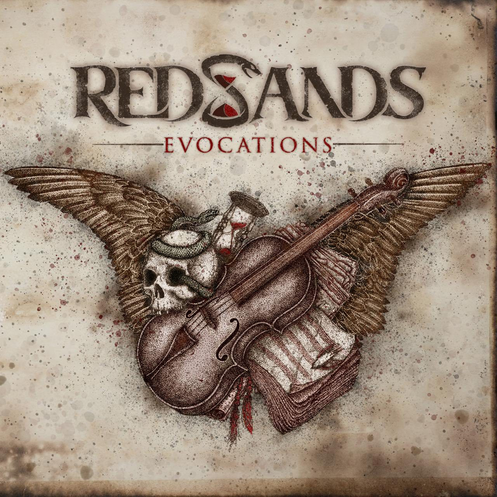

[L]a agrupación mexicana de metal melódico, Red Sands, ha sacudido los cimientos de la escena independiente con el estreno de "System". Tras años de perfeccionamiento sonoro, la banda libera este videoclip oficial como el punto más alto del lanzamiento de su EP debut: *Evocations*, marcando un antes y un después en su trayectoria.
Filmado en el emblemático Gato Calavera bajo la dirección de Tania Velasco (Luciérnaga Productions), el visual captura la energía cruda de la banda en su hábitat natural. Con una edición agresiva a cargo de Mónica Almereyda, el video complementa una lírica incendiaria que cuestiona las estructuras de poder, la corrupción y el control social mediado por el miedo.

La arquitectura sonora de "System" y del EP completo es obra de Daniel Novelo, quien lideró la producción, ingeniería y arreglos. El toque final de potencia fue otorgado por Gus Calavera en Harmony Box Studio, logrando ese equilibrio quirúrgico entre la fuerza del metal y la sofisticación melódica que define la identidad de Red Sands.